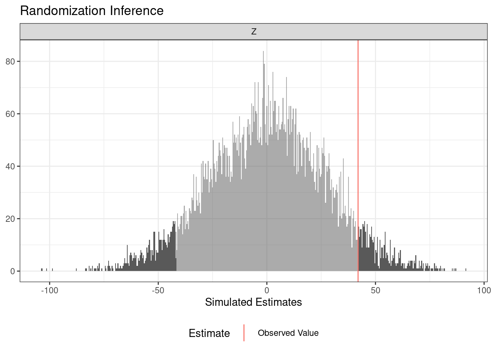
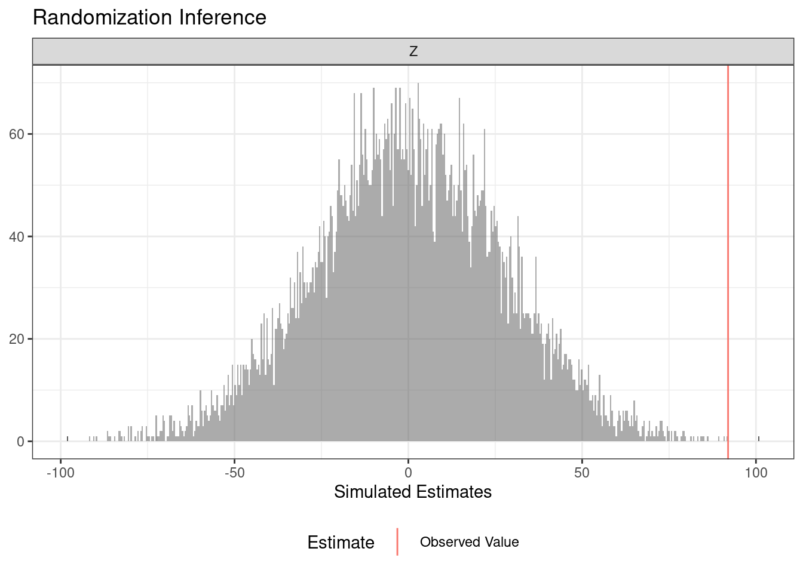
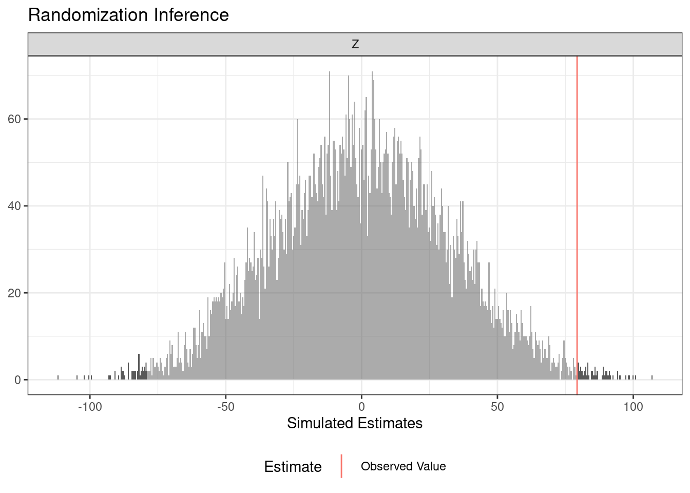
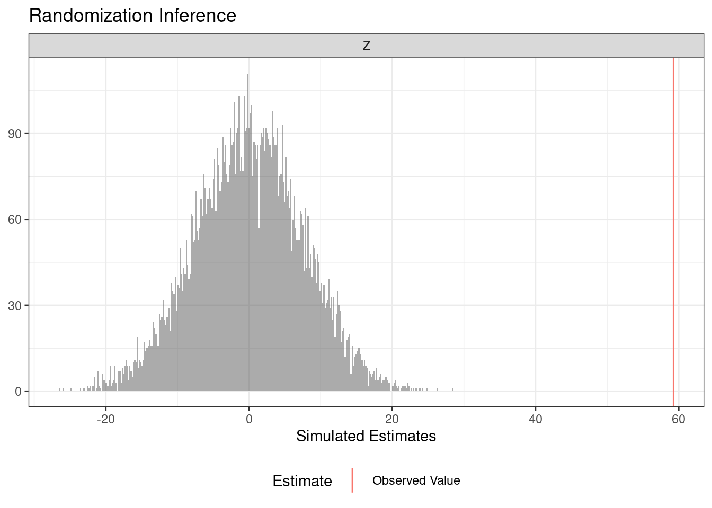
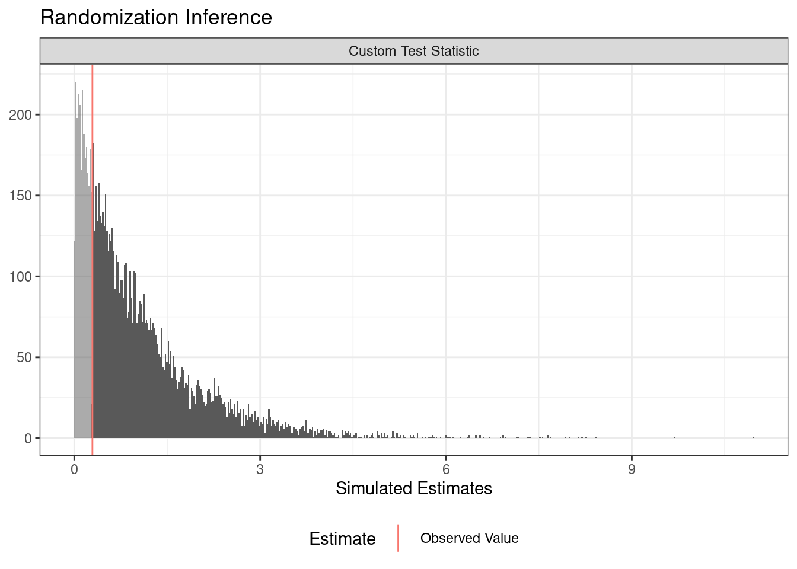
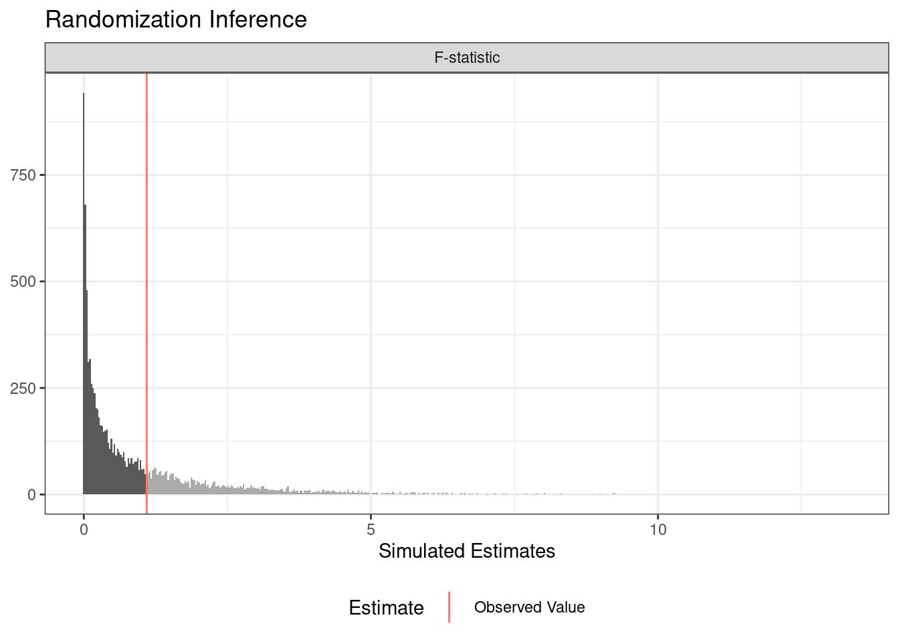
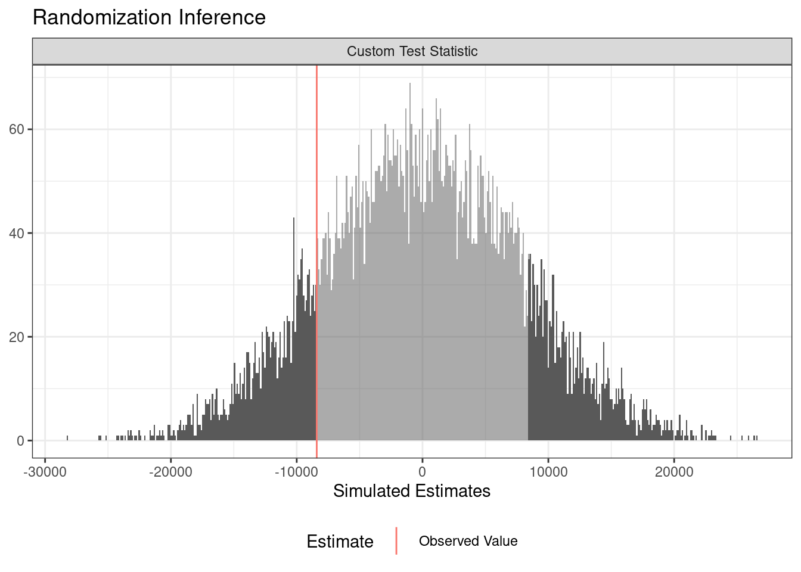
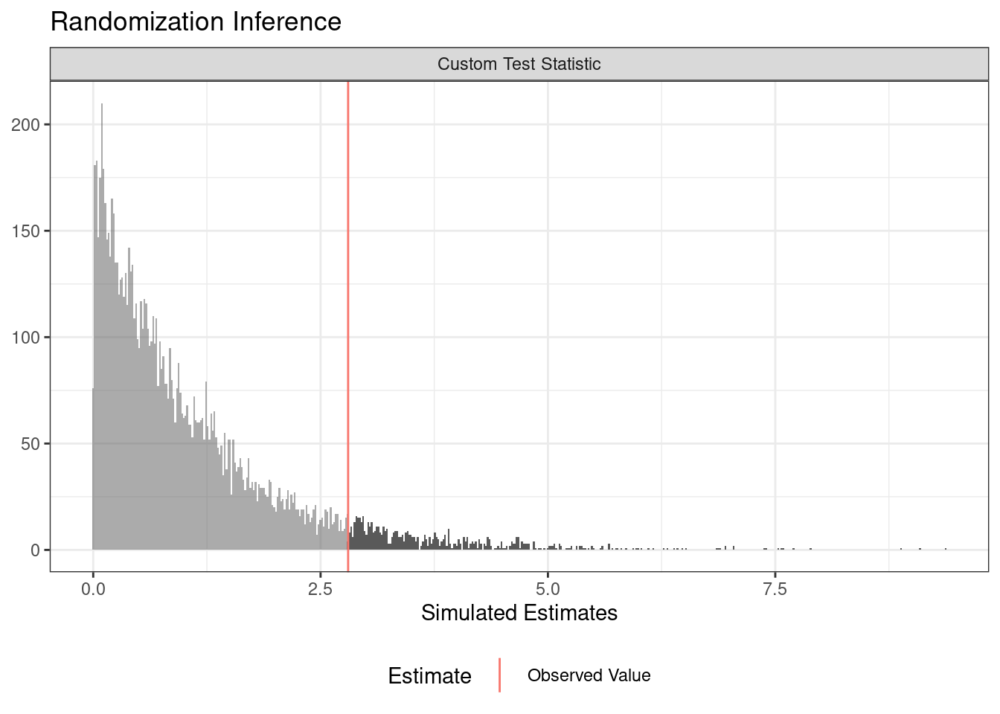
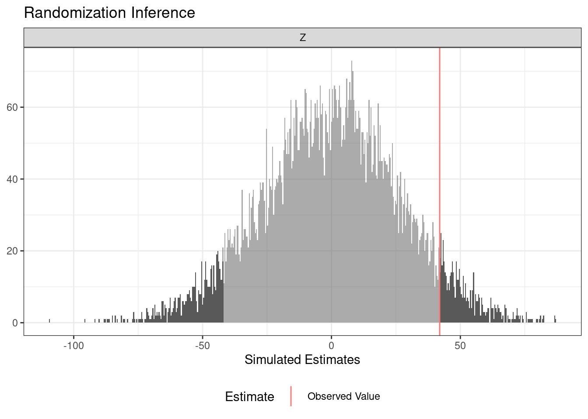
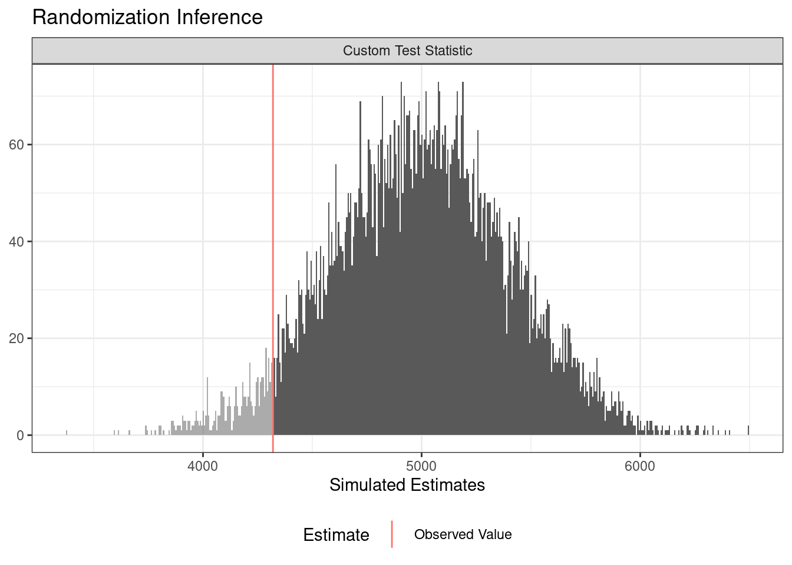

10 Randomization Inference Procedures with ri2
Randomization inference is a procedure for conducting hypothesis tests that takes explicit account of a study’s randomization procedure. See 10 things about Randomization Inference for more about the theory behind randomization inference. In this guide, we’ll see how to use the ri2 package for r to conduct 10 different analyses. This package was developed with funding from EGAP’s innaugural round of standards grants, which are aimed at projects designed to improve the quality of experimental research.
To illustrate what you can do with ri2, we’ll use some data from a hypothetical experiment involving 200 students in 20 schools. We’ll consider how to do randomization inference using a variety of different designs, including complete random assignment, block random assignment, cluster random assignment, and a multi-arm trial. You can check the kinds of random assignment methods guide for more on the varieties of random assignment.
Follow the links below to download the four datasets we’ll use in the examples:
- complete randomization assignment dataset
- blocked randomization assignment dataset
- clustered randomization assignment dataset
- three-arm randomization assignment dataset
1. Randomization inference for the Average Treatment Effect
We’ll start with the most common randomization inference task: testing an observed average treatment effect estimate against the sharp null hypothesis of no effect for any unit.
In ri2, you always “declare” the random assignment procedure so the computer knows how treatments were assigned. In the first design we’ll consider, exactly half of the 200 students were assigned to treatment using complete random assignment.
library(ri2)
complete_dat <- read.csv("ri2_complete_dat.csv")
complete_dec <- declare_ra(N = 200)Now all that remains is a call to conduct_ri. The sharp_hypothesis argument is set to 0 by default corresponding to the sharp null hypothesis of no effect for any unit. We can see the output using the summary and plot commands.
sims <- 10000
ri_out <-
conduct_ri(
Y ~ Z,
declaration = complete_dec,
sharp_hypothesis = 0,
data = complete_dat,
sims = sims
)
summary(ri_out) term estimate two_tailed_p_value
1 Z 41.98 0.1144plot(ri_out)
You can obtain one-sided p-values with a call to summary:
summary(ri_out, p = "upper") term estimate upper_p_value
1 Z 41.98 0.0564summary(ri_out, p = "lower") term estimate lower_p_value
1 Z 41.98 0.94362. Randomization inference for alternative designs
The answer that ri2 produces depends deeply on the randomization procedure. The next example imagines that the treatment was blocked at the school level.
blocked_dat <- read.csv("ri2_blocked_dat.csv")
blocked_dec <- declare_ra(blocks = blocked_dat$schools)
ri_out <-
conduct_ri(
Y ~ Z,
declaration = blocked_dec,
data = blocked_dat,
sims = sims
)
summary(ri_out) term estimate two_tailed_p_value
1 Z 91.98 2e-04plot(ri_out)
A very similar syntax accommodates a cluster randomized trial.
clustered_dat <- read.csv("ri2_clustered_dat.csv")
clustered_dec <- declare_ra(clusters = clustered_dat$schools)
ri_out <-
conduct_ri(
Y ~ Z,
declaration = clustered_dec,
data = clustered_dat,
sims = sims
)
summary(ri_out) term estimate two_tailed_p_value
1 Z 79.32 0.0111plot(ri_out)
3. Randomization inference with covariate adjustment
Covariate adjustment can often produce large gains in precision. To analyze an experiment with covariate adjustment, simply include the covariates in the formula argument of conduct_ri:
complete_dec <- declare_ra(N = 200)
ri_out <-
conduct_ri(
Y ~ Z + PSAT,
declaration = complete_dec,
data = complete_dat,
sims = sims
)
summary(ri_out) term estimate two_tailed_p_value
1 Z 59.27132 0plot(ri_out)
4. Randomization inference for a balance test
You can use randomization inference to conduct a balance test (or randomization check). In this case, we write a function of data that return some balance statistic (the F-statistic from a regression of the treatment assignment on two covariates).
balance_fun <- function(data) {
summary(lm(Z ~ professionalism + PSAT, data = data))$f[1]
}
ri_out <-
conduct_ri(
test_function = balance_fun,
declaration = complete_dec,
data = complete_dat,
sims = sims
)Warning in data.frame(est_sim = test_stat_sim, est_obs = test_stat_obs, : row
names were found from a short variable and have been discardedsummary(ri_out) term estimate two_tailed_p_value
1 Custom Test Statistic 0.2924994 0.7489plot(ri_out)
5. Randomization inference for treatment effect heterogeneity by subgroups
You can assess whether the treatment engenders different treatment effects among distinct subgroups by comparing the model fit (using an F-statistic) of two nested models:
- A regression of the outcome on the treatment assignment and the subgroup indicator
- A regression of the outcome on the treatment assignment, subgroup indicator, and their interaction
The null hypothesis we’re testing against in this example is the sharp hypothesis that the true treatment effect for each unit is the observed average treatment effect, i.e., that effects are constant.
ate_obs <- with(complete_dat, mean(Y[Z == 1]) - mean(Y[Z == 0]))
ri_out <-
conduct_ri(
model_1 = Y ~ Z + high_quality,
model_2 = Y ~ Z + high_quality + Z * high_quality,
declaration = complete_dec,
sharp_hypothesis = ate_obs,
data = complete_dat,
sims = sims
)
summary(ri_out) term estimate two_tailed_p_value
1 F-statistic 1.095294 0.7015plot(ri_out)
6. Randomization inference for unmodeled treatment effect heterogeneity
Another way to investigate treatment effect heterogeneity is to consider whether the variance in the treatment and control groups are different. We can therefore test whether the difference-in-variances is larger in magnitude than what we would expect under the sharp null hypothesis of no effect for any unit.
d_i_v <- function(dat) {
with(dat, var(Y[Z == 1]) - var(Y[Z == 0]))
}
ri_out <-
conduct_ri(
test_function = d_i_v,
declaration = complete_dec,
data = complete_dat,
sims = sims
)
summary(ri_out) term estimate two_tailed_p_value
1 Custom Test Statistic -8408.684 0.2824plot(ri_out)
7. Randomization inference for multi-arm trials
In a three-arm trial, the research might wish to compare each treatment to control separately. To do this, we must change the null hypothesis in a subtle way: we are going to assume the sharp null for each pairwise comparison. For example, when comparing treatment 1 to control, we exclude the subjects assigned to treatment 2 and pretend we simply have a two arm trial conducted among the subjects assigned to control and treatment 1.
three_arm_dat <- read.csv("ri2_three_arm_dat.csv")
three_arm_dec <- declare_ra(N = 200,
conditions = c("Control", "Treatment 1", "Treatment 2"))
ri_out <-
conduct_ri(
formula = Y ~ Z,
declaration = three_arm_dec,
data = three_arm_dat,
sims = sims
)
summary(ri_out) term estimate two_tailed_p_value
1 ZTreatment 1 26.72546 NA
2 ZTreatment 2 -48.52827 NA## plot(ri_out)8. Randomization inference for joint significance
In that same three-arm trial that compares two treatments to a control, we might be interested in testing whether, jointly, the treatments appear to change outcomes relative to the control. This is analogous to a joint F-test, conducted via randomization inference. We assume the sharp null that a unit would express their observed outcome in any of the three conditions.
F_statistic <- function(data) {
summary(lm(Y ~ Z, data = data))$f[1]
}
ri_out <-
conduct_ri(
test_function = F_statistic,
declaration = three_arm_dec,
data = three_arm_dat,
sims = sims
)Warning in data.frame(est_sim = test_stat_sim, est_obs = test_stat_obs, : row
names were found from a short variable and have been discardedsummary(ri_out) term estimate two_tailed_p_value
1 Custom Test Statistic 2.802927 0.0664plot(ri_out)
9. Randomization inference under noncompliance
Some experiments encounter noncompliance, the slippage between treatment as assigned and treatment as delivered. The Complier Average Causal Effect (\(CACE\)) can be shown (under standard assumptions plus monotonicity) to be the ratio of the effect of assignment on the outcome – the “Intention-to-Treat” (\(ITT_y\)) and the effect of assignment on treatment receipt the (\(ITT_D\)). (The \(CACE\) is also called Local Average Treatment Effect. See our guide 10 Things to Know About the Local Average Treatment Effect for more details.) Because the \(CACE\) is just a rescaled, \(ITT_y\), a hypothesis test with respect to the \(ITT_y\) is a valid test for the \(CACE\). In practice, researchers can simply conduct a randomization inference test exactly as they would for the ATE, ignoring noncompliance altogether.
ITT_y = with(complete_dat, mean(Y[Z == 1]) - mean(Y[Z == 0]))
ITT_d = with(complete_dat, mean(D[Z == 1]) - mean(D[Z == 0]))
CACE <- ITT_y / ITT_d
ri_out <-
conduct_ri(
Y ~ Z, # notice we do inference on the ITT_y
declaration = complete_dec,
data = complete_dat,
sims = sims
)
summary(ri_out) term estimate two_tailed_p_value
1 Z 41.98 0.1156plot(ri_out)
10. Randomization inference for arbitrary test statistics
ri2 can accommodate any scalar test statistic. A favorite among some analysts is the Wilcox rank-sum statistic, which can be extracted from the wilcox.test() function:
wilcox_fun <- function(data){
wilcox_out <- with(data, wilcox.test(Y ~ Z))
wilcox_out$statistic
}
ri_out <-
conduct_ri(
test_function = wilcox_fun,
declaration = complete_dec,
data = complete_dat,
sims = sims
)Warning in data.frame(est_sim = test_stat_sim, est_obs = test_stat_obs, : row
names were found from a short variable and have been discardedsummary(ri_out) term estimate two_tailed_p_value
1 Custom Test Statistic 4320 0.9565plot(ri_out)